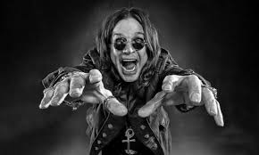
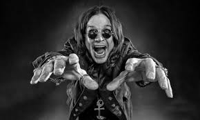

Quem é Ozzy Osbourne?
John Michael " Ozzy " Osbourne (3 de dezembro de 1948 - 22 de julho de 2025) foi um cantor, compositor e personalidade da mídia inglês. Ele foi cofundador da banda pioneira de heavy metal Black Sabbath em 1968 e ganhou destaque na década de 1970 como vocalista principal. Durante esse tempo, ele adotou o título de " Prince of Darkness ". [ 3 ] [ 4 ] Ele se apresentou nos primeiros oito álbuns de estúdio da banda , incluindo Black Sabbath , Paranoid (ambos de 1970) e Master of Reality (1971), antes de ser demitido em 1979 devido a seus problemas com álcool e outras drogas.
.jpeg) 

Carreira
A carreira de Ozzy Osbourne
Osbourne começou uma carreira solo na década de 1980 e formou sua banda com Randy Rhoads e Bob Daisley , com quem gravou os álbuns Blizzard of Ozz (1980) e Diary of a Madman (1981). Ao longo da década, ele atraiu controvérsia por suas palhaçadas tanto no palco quanto fora dele, e foi acusado de promover o satanismo pela direita cristã . No geral, Osbourne lançou treze álbuns de estúdio solo , os sete primeiros dos quais foram certificados multi-platina nos Estados Unidos. Ele se reuniu com o Black Sabbath em várias ocasiões. Ele voltou de 1997 a 2005, e novamente em 2012; Durante esta segunda reunião, ele cantou no último álbum de estúdio da banda, 13 (2013), antes de embarcarem em uma turnê de despedida que terminou em 2017. Em 5 de julho de 2025, Osbourne realizou seu último show no concerto Back to the Beginning em Birmingham , tendo anunciado que seria seu último devido a problemas de saúde. Embora pretendesse continuar gravando, ele faleceu 17 dias depois. Osbourne vendeu mais de 100 milhões de álbuns, incluindo seu trabalho solo e lançamentos do Black Sabbath. [ 5 ] [ 6 ] Ele foi introduzido no Hall da Fama do Rock and Roll como membro do Black Sabbath em 2006 [ 7 ] e como artista solo em 2024. [ 8 ] Ele também foi introduzido no Hall da Fama da Música do Reino Unido, tanto solo quanto com o Black Sabbath em 2005. Ele foi homenageado com estrelas na Calçada da Fama de Hollywood [ 9 ] em 12 de abril de 2002 e na Calçada das Estrelas de Birmingham em 6 de julho de 2007. No MTV Europe Music Awards de 2014 , ele recebeu o Global Icon Award . Em 2015, ele recebeu o Prêmio Ivor Novello pelo Conjunto da Obra da Academia Britânica de Compositores, Compositores e Autores .
Black Sabbath
No final de 1967, Geezer Butler formou sua primeira banda, Rare Breed, e recrutou Osbourne para ser o vocalista. [ 19 ] A banda fez dois shows e se separou. Osbourne e Butler se reuniram em outra banda, Polka Tulk Blues, que incluía o guitarrista Tony Iommi e o baterista Bill Ward , cuja banda Mythology havia se separado recentemente. Eles renomearam a banda para Earth, mas depois de serem acidentalmente contratados para um show em vez de uma banda diferente com o mesmo nome, eles decidiram mudar o nome da banda novamente, optando pelo nome Black Sabbath em agosto de 1969. O nome da banda foi inspirado no filme de mesmo título . [ 29 ] O Black Sabbath percebeu como as pessoas gostavam de se assustar durante suas aparições, o que inspirou sua decisão de tocar um estilo de música blues pesado misturado com sons e letras sombrias. [ 11 ] Enquanto gravava seu primeiro álbum, Butler leu um livro de ocultismo e acordou vendo uma figura escura no final de sua cama. Butler contou a Osbourne sobre isso e juntos eles escreveram a letra de " Black Sabbath ", sua primeira música com um estilo mais sombrio. [ 30 ] [ 31 ] Black Sabbath em 1972. LR: Tony Iommi , Osbourne, Bill Ward , Geezer Butler A gravadora americana da banda, Warner Bros. Records , investiu apenas modestamente, mas o Black Sabbath alcançou um sucesso rápido e duradouro. Construído em torno dos riffs de guitarra de Tony Iommi, das letras de Geezer Butler, das batidas de bateria sombrias de Bill Ward e encabeçado pelos vocais assustadores de Osbourne, seu álbum de estreia, Black Sabbath , e o segundo, Paranoid , foram comercialmente bem-sucedidos e também ganharam considerável veiculação nas rádios. Osbourne lembrou, no entanto, que "naquela época, a banda não era muito popular entre as mulheres". [ 19 ] Por volta dessa época, Osbourne conheceu sua futura esposa, Sharon Arden . [ 19 ] Após o sucesso inesperado de seu primeiro álbum, o Black Sabbath estava considerando seu pai, Don Arden , como seu novo empresário, e Sharon estava naquela época trabalhando como recepcionista de Don. [ 19 ] Osbourne admitiu que se sentiu atraído por ela imediatamente, mas presumiu que "ela provavelmente pensava que eu era um lunático". [ 19 ] Osbourne mais tarde lembrou que a melhor coisa sobre eventualmente escolher Don Arden como empresário foi que ele conseguiu ver Sharon regularmente, embora seu relacionamento fosse estritamente profissional naquele momento. [ 19 ] Cinco meses após o lançamento de Paranoid , a banda lançou Master of Reality . O álbum alcançou o top dez nos Estados Unidos e no Reino Unido e foi certificado como ouro em menos de dois meses. [ 32 ] Na década de 1980, recebeu a certificação de platina [ 32 ] e foi dupla platina no início do século XXI. [ 32 ] As críticas ao álbum foram desfavoráveis. Lester Bangs, da Rolling Stone, notoriamente descartou Master of Reality como "ingênuo, simplista, repetitivo, uma completa bobagem ", embora a mesma revista mais tarde colocasse o álbum na posição 298 em sua lista dos 500 melhores álbuns de todos os tempos, compilada em 2003. [ 33 ] Em setembro de 1972, o Black Sabbath lançou Black Sabbath Vol. 4. Os críticos foram desdenhosos do álbum; no entanto, ele alcançou o status de ouro em menos de um mês e foi o quarto álbum consecutivo da banda a vender mais de um milhão de cópias nos Estados Unidos. [ 31 ] [ 34 ] [ 35 ] Em novembro de 1973, o Black Sabbath lançou o aclamado pela crítica Sabbath Bloody Sabbath . Pela primeira vez, a banda recebeu críticas favoráveis na grande imprensa. Gordon Fletcher da Rolling Stone chamou o álbum de "um caso extraordinariamente emocionante" e "nada menos que um sucesso completo". [ 36 ] Décadas depois, Eduardo Rivadavia da AllMusic chamou o álbum de uma "obra-prima, essencial para qualquer coleção de heavy metal", ao mesmo tempo em que afirmou que a banda exibiu "um novo senso de finesse e maturidade". [ 37 ] O álbum marcou o quinto álbum consecutivo de platina da banda nos Estados Unidos. [ 38 ] Sabotage foi lançado em julho de 1975. Novamente, houve críticas favoráveis. A Rolling Stone declarou: " Sabotage não é apenas o melhor disco do Black Sabbath desde Paranoid , pode ser o melhor de todos os tempos." [ 39 ] Em uma análise retrospectiva, a AllMusic foi menos favorável, observando que "a química mágica que tornou álbuns como Paranoid e Volume 4 tão especiais estava começando a se desintegrar". [ 40 ] Technical Ecstasy , lançado em 25 de setembro de 1976, também foi recebido com críticas mistas. A AllMusic dá ao álbum duas estrelas e observa que a banda estava "se desfazendo em um ritmo alarmante". [ 41 ] Demissão
Demissão
Entre o final de 1977 e o início de 1978, [ 42 ] Osbourne deixou a banda por três meses para seguir um projeto solo chamado Blizzard of Ozz , [ 43 ] um título que havia sido sugerido por seu pai. [ 44 ] Três membros da banda Necromandus , que apoiaram o Sabbath em Birmingham quando eles eram chamados de Earth , apoiaram Osbourne no estúdio e brevemente se tornaram a primeira encarnação de sua banda solo. [ 45 ] A pedido dos outros membros da banda, Osbourne voltou ao Sabbath. [ 46 ] A banda passou cinco meses no Sounds Interchange Studios em Toronto , onde escreveram e gravaram seu próximo álbum, Never Say Die! "Demorou bastante", disse Iommi sobre Never Say Die! "Estávamos ficando realmente drogados, usando muita droga. Íamos para as sessões e tínhamos que fazer as malas porque estávamos muito chapados; tínhamos que parar. Ninguém conseguia fazer nada direito; estávamos em todos os lugares e todos estavam tocando uma coisa diferente. voltávamos e dormíamos, e tentávamos novamente no dia seguinte." [ 47 ] Em maio de 1978, o Black Sabbath iniciou a turnê Never Say Die! com o Van Halen como banda de abertura. Os críticos chamaram a apresentação do Sabbath de "cansada e sem inspiração", em forte contraste com a apresentação "jovem" do Van Halen, que estava em turnê pelo mundo pela primeira vez. [ 48 ] A banda gravou seu show no Hammersmith Odeon em junho de 1978, que foi lançado em vídeo como Never Say Die . O show final da turnê e a última aparição de Osbourne com o Black Sabbath por mais sete anos, até 1985, foi em Albuquerque, Novo México, em 11 de dezembro. [ 49 ] Em 1979, o Black Sabbath retornou ao estúdio, mas tensões e conflitos surgiram entre os membros da banda. Osbourne lembrou que foi solicitado a gravar seus vocais repetidamente, e as faixas foram manipuladas infinitamente por Iommi. [ 50 ] O relacionamento entre Osbourne e Iommi tornou-se contencioso. Em 27 de abril de 1979, por insistência de Iommi, mas com o apoio de Butler e Ward, Osbourne foi expulso do Black Sabbath. [ 19 ] Os motivos fornecidos a ele foram que ele não era confiável e tinha problemas excessivos de abuso de substâncias em comparação com os outros membros. Osbourne afirmou que seu uso de álcool, tabaco e outras drogas naquela época era semelhante ao dos outros membros. [ 51 ]
Reuniões do Black Sabbath
Após duas breves reuniões para o Live Aid em 1985 e em um show de Ozzy Osbourne em Costa Mesa, Califórnia , em 15 de novembro de 1992, Osbourne, Iommi e Butler se reuniram formalmente como Black Sabbath em 1997 para os shows do Ozzfest de 1997. [ 55 ] Ward estava ausente devido a problemas de saúde. [ 55 ] Em dezembro de 1997, todos os quatro membros da banda se reuniram para gravar o álbum Reunion . Osbourne também excursionou com a banda novamente de 1997 a 1999 para a turnê de shows do álbum. [ 31 ] [ 56 ] [ 57 ] [ 58 ] O álbum provou ser um sucesso comercial após seu lançamento em outubro de 1998. [ 57 ] A formação original do Black Sabbath, Ozzy, Tony Iommi , Geezer Butler e Bill Ward , se reuniu em novembro de 2011 para uma turnê mundial e um novo álbum. [ 59 ] Ward teve que sair por motivos contratuais, então o projeto continuou com Brad Wilk, do Rage Against the Machine, substituindo Ward na bateria. Eles fizeram seu primeiro show de reunião em maio de 2012, na O2 Academy em sua cidade natal, Birmingham . [ 60 ] O álbum, intitulado 13 , foi lançado em 11 de junho de 2013, [ 61 ] e liderou a parada de álbuns do Reino Unido e a Billboard 200 dos EUA . [ 62 ] [ 63 ] Em janeiro de 2016, a banda iniciou uma turnê de despedida, intitulada " The End ", supostamente significando as apresentações finais do Black Sabbath. [ 64 ] [ 65 ] Os shows finais da turnê The End aconteceram na Genting Arena em sua cidade natal, Birmingham, em 2 e 4 de fevereiro de 2017, onde Tommy Clufetos substituiu Bill Ward como baterista no show final. [ 66 ] [ 67 ] Em 8 de agosto de 2022, Osbourne e Iommi fizeram uma aparição surpresa durante a cerimônia de encerramento dos Jogos da Commonwealth de 2022 em Birmingham. Esta foi a primeira apresentação ao vivo de Osbourne em três anos, após um período de problemas de saúde. Osbourne fez seu último show, anunciado como " Back to the Beginning ", ao lado da formação original do Black Sabbath, no Villa Park em Birmingham em 5 de julho de 2025. [ 70 ] A banda e Osbourne tocaram um breve set cada, assistido por uma multidão de mais de 40.000 espectadores e um público de pico de transmissão ao vivo de 5,8 milhões. Tendo ficado incapaz de ficar de pé devido à doença de Parkinson , Osbourne se apresentou sentado em um trono preto. Todos os lucros do evento foram doados igualmente para o The Cure Parkinson's Trust , o Birmingham Children's Hospital e o Acorn Children's Hospice .
Carreira solo
Depois de deixar o Black Sabbath , Osbourne lembrou: "Eu tinha recebido £ 96.000 pela minha parte do nome, então eu simplesmente me tranquei e passei três meses usando cocaína e bebida. Meu pensamento era: 'Esta é minha última festa, porque depois disso eu vou voltar para Birmingham e para o desemprego .' No entanto, Don Arden o contratou para a Jet Records com o objetivo de gravar novo material. Arden enviou sua filha Sharon para Los Angeles para "cuidar das necessidades de Ozzy, quaisquer que fossem", para proteger seu investimento.Arden inicialmente esperava que Osbourne retornasse ao Sabbath, que ele estava gerenciando pessoalmente na época, e mais tarde tentou convencer o cantor a nomear sua nova banda "Son of Sabbath", que Osbourne odiava. [ 19 ] Sharon tentou convencer Osbourne a formar um supergrupo com o guitarrista Gary Moore . [ 19 ] "Quando eu morava em Los Angeles", Moore lembrou, " [a banda de Moore] G-Force o ajudava a fazer testes com músicos. Se os bateristas estivessem fazendo testes, eu tocava guitarra, e se um baixista aparecesse, meu baterista ajudava. Nós sentíamos pena dele, basicamente. Ele estava sempre por perto tentando me convencer a entrar, e eu não estava nem aí."
Galeria